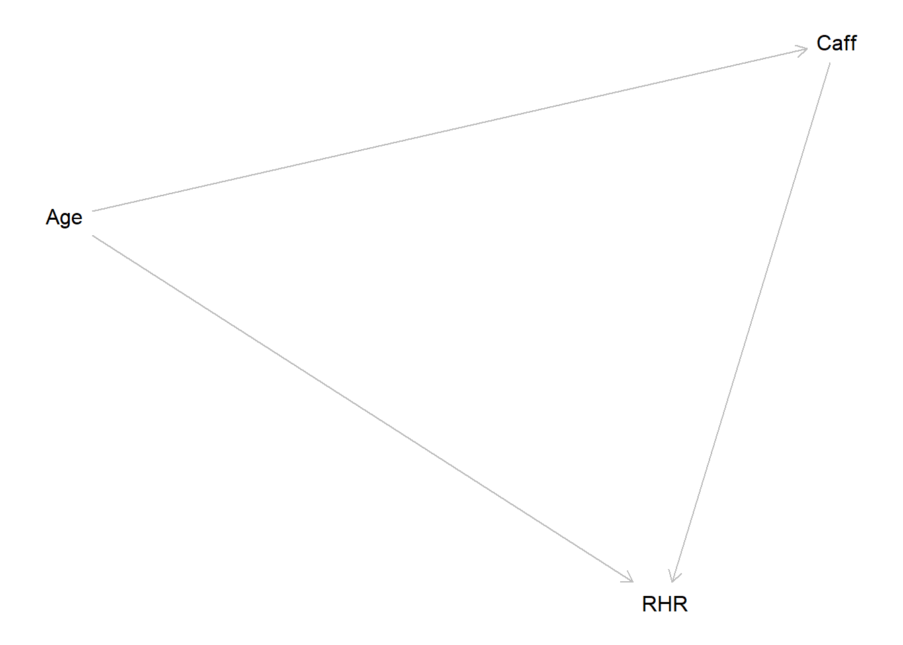
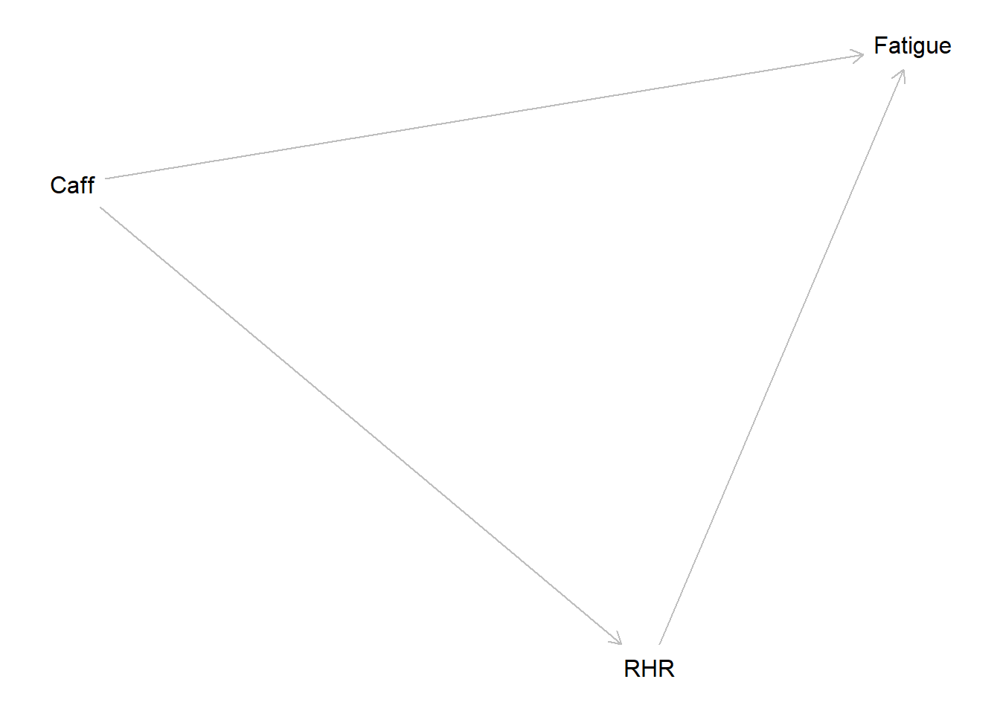
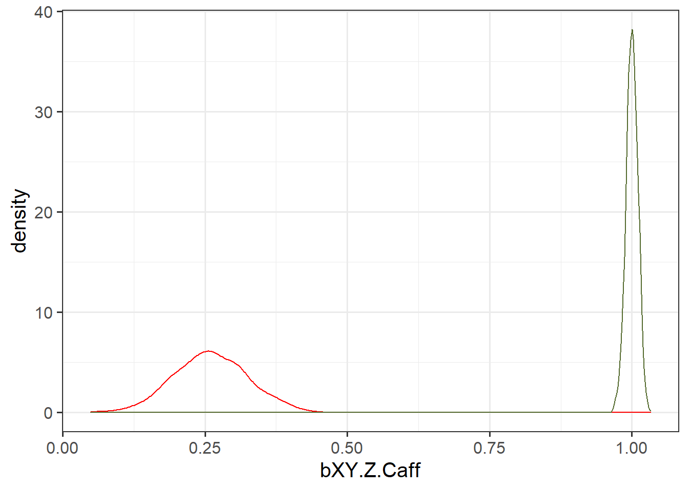

library(dagitty)
# in our example above, this was what we theorised:
g1 <- dagitty( "dag {
Caff -> RHR
Age -> Caff
Age -> RHR
}")
plot(graphLayout(g1))
# if that is the case, we _do_ want to control for Age. If we don't control for Age, then all of the Age -> RHR relationship has to go via Age -> Caff -> RHR.
# by including Age in the model, it opens the path from Age -> RHR, allowing Caff -> RHR to be estimated without the confounding effect of Age.
# caffeine creates more cortisol receptors in the brain (result = fatigue)
# higher RHR causes fatigue (heart working harder)
g1 <- dagitty( "dag {
Caff -> RHR
RHR -> Fatigue
Caff -> Fatigue
}")
plot(graphLayout(g1)) 
# we're still interested in Caff -> RHR
# if we control for Fatigue, then we open it up for some of the effect of Caffeine to RHR to go via Fatigue.
fs <- function(){
Caff = rnorm(100, 100, 30)
RHR = 60 + 1*Caff + rnorm(100,0,3)
Fatigue = .5*Caff + 2*RHR + rnorm(100, 0, 5)
return(c(
bXY.Z = coef(lm(RHR ~ Caff + Fatigue))[2],
bXY = coef(lm(RHR ~ Caff))[2]
)
)
}
res = mcreplicate::mc_replicate(1e3, fs())[1] "varlist"
[1] "fs" "g1" "generate_id2" "generate_idq2"
[5] "optbegin" "optend" "params" "qbegin"
[9] "qend" "solbegin" "solend" res = data.frame(t(res))
library(ggplot2)
ggplot(res)+
geom_density(aes(x=bXY.Z.Caff),col="red")+
geom_density(aes(x=bXY.Caff),col="darkolivegreen")